評価と視覚化
(Press ? for help, n and p for next and previous slide)
村田 昇
最適化問題
制約条件 \(\|\boldsymbol{a}\|=1\) の下で以下の関数を最大化せよ
\begin{equation} f(\boldsymbol{a}) = \sum_{i=1}^n(\boldsymbol{a}^{\mathsf{T}}\boldsymbol{x}_i -\boldsymbol{a}^{\mathsf{T}}\bar{\boldsymbol{x}})^2, \quad \bar{\boldsymbol{x}} = \frac{1}{n}\sum_{i=1}^n\boldsymbol{x}_i \end{equation}
中心化したデータ行列
\begin{equation} X = \begin{pmatrix} \boldsymbol{x}_{1}^{\mathsf{T}}-\bar{\boldsymbol{x}}^{\mathsf{T}} \\ \vdots \\ \boldsymbol{x}_{n}^{\mathsf{T}}-\bar{\boldsymbol{x}}^{\mathsf{T}} \end{pmatrix} = \begin{pmatrix} x_{11}-\bar{x}_1 & \cdots & x_{1p}-\bar{x}_p\\ \vdots & & \vdots \\ x_{n1}-\bar{x}_1 & \cdots & x_{np}-\bar{x}_p \end{pmatrix} \end{equation}
評価関数 \(f(\boldsymbol{a})\) は行列 \(X^{\mathsf{T}}X\) の二次形式
\begin{equation} f(\boldsymbol{a}) = \boldsymbol{a}^{\mathsf{T}}X^{\mathsf{T}}X\boldsymbol{a} \end{equation}
最適化問題
\begin{equation} \text{maximize}\quad f(\boldsymbol{a}) = \boldsymbol{a}^{\mathsf{T}}X^{\mathsf{T}}X\boldsymbol{a} \quad\text{s.t.}\quad \boldsymbol{a}^{\mathsf{T}}\boldsymbol{a}=1 \end{equation}
解の条件
\(f(\boldsymbol{a})\) の極大値を与える \(\boldsymbol{a}\) は \(X^{\mathsf{T}}X\) の固有ベクトルである
\begin{equation} X^{\mathsf{T}}X\boldsymbol{a} = \lambda\boldsymbol{a} \end{equation}
第1主成分負荷量
\(X^{\mathsf{T}}X\) の第1(最大)固有値 \(\lambda_1\) に対応する固有ベクトル \(\boldsymbol{a}_1\)
第\(k\)主成分負荷量
\(X^{\mathsf{T}}X\) の第 \(k\) 固有値 \(\lambda_k\) に対応する固有ベクトル \(\boldsymbol{a}_k\)
ベクトル\(\boldsymbol{a}\) を \(X^{\mathsf{T}}X\) の単位固有ベクトルとするとき
\begin{equation} f(\boldsymbol{a})=\boldsymbol{a}^{\mathsf{T}}X^{\mathsf{T}}X\boldsymbol{a} \end{equation}
の値を求めよ
行列\(X\)を中心化したデータ行列， ベクトル\(\boldsymbol{a}_{k}\)を第\(k\)主成分負荷量とするとき， 第\(k\)主成分得点の平均まわりの平方和
\begin{equation} \sum_{i=1}^n(\boldsymbol{a}_{k}^{\mathsf{T}}\boldsymbol{x}_i -\boldsymbol{a}_{k}^{\mathsf{T}}\bar{\boldsymbol{x}})^2 \end{equation}
を \(X\)と\(\boldsymbol{a}_{k}\)で表せ
固有値・固有ベクトルの性質を利用する
\(X^{\mathsf{T}}X\)の 固有値・固有ベクトルを \(\lambda_{k}, \boldsymbol{a}_{k}\) とする． \(\boldsymbol{a}=\boldsymbol{a}_{k}\)とすれば
\begin{align} f(\boldsymbol{a}_{k}) &=\boldsymbol{a}_{k}^{\mathsf{T}}X^{\mathsf{T}}X\boldsymbol{a}_{k}\\ &=\boldsymbol{a}_{k}^{\mathsf{T}}\lambda_{k}\boldsymbol{a}_{k} &&\text{(固有ベクトル)}\\ &=\lambda_{k} &&\text{(単位ベクトル)} \end{align}
定義に従い計算すればよい(前回の復習)
\begin{align} f(\boldsymbol{a}_{k}) &= \sum_{i=1}^{n}(\boldsymbol{a}_{k}^{\mathsf{T}}\boldsymbol{x}_i -\boldsymbol{a}_{k}^{\mathsf{T}}\bar{\boldsymbol{x}})^2\\ &= \sum_{i=1}^{n} (X\boldsymbol{a}_{k})_{i}^{2}\\ &= \sum_{i=1}^{n} (X\boldsymbol{a}_{k})_{i} (X\boldsymbol{a}_{k})_{i}\\ &= (\boldsymbol{a}_{k}^{\mathsf{T}}X^{\mathsf{T}}) (X\boldsymbol{a}_{k}) = \boldsymbol{a}_{k}^{\mathsf{T}}X^{\mathsf{T}}X\boldsymbol{a}_{k} \end{align}
回帰分析で考察した寄与率の一般形
\begin{equation} \text{(寄与率)}= \frac{\text{(その方法で説明できる変動)}}{\text{(データ全体の変動)}} \end{equation}
主成分分析での定義 (proportion of variance)
\begin{equation} \text{(寄与率)}= \frac{\text{(主成分の変動)}}{\text{(全体の変動)}} \end{equation}
行列 \(X^{\mathsf{T}}X\) (非負定値対称行列) のスペクトル分解
\begin{equation} X^{\mathsf{T}}X =\sum_{k=1}^{p}\lambda_{k}\boldsymbol{a}_{k}\boldsymbol{a}_{k}^{\mathsf{T}} \end{equation}
主成分の変動の評価
\begin{equation} f(\boldsymbol{a}_{k}) = \boldsymbol{a}_{k}^{\mathsf{T}}X^{\mathsf{T}}X\boldsymbol{a}_{k} =\lambda_{k} \end{equation}
主成分と全体の変動
\begin{align} \text{(主成分の変動)} &= \sum_{i=1}^{n}(\boldsymbol{a}_k^{\mathsf{T}}\boldsymbol{x}_i -\boldsymbol{a}_k^{\mathsf{T}}\bar{\boldsymbol{x}})^2 =\boldsymbol{a}_{k}^{\mathsf{T}}X^{\mathsf{T}}X\boldsymbol{a}_{k} =\lambda_k\\ \text{(全体の変動)} &= \sum_{i=1}^{n}\|\boldsymbol{x}_i-\bar{\boldsymbol{x}}\|^2 =\sum_{l=1}^p\boldsymbol{a}_{l}^{\mathsf{T}}X^{\mathsf{T}}X\boldsymbol{a}_{l} =\sum_{l=1}^p\lambda_l \end{align}
固有値による寄与率の表現
\begin{equation} \text{(寄与率)} = \frac{\lambda_k}{\sum_{l=1}^p\lambda_l} \end{equation}
スペクトル分解との関係
\begin{align} \text{(全体の変動)} &=\sum_{i=1}^{n}\|\boldsymbol{x}_i-\bar{\boldsymbol{x}}\|^2 \\ &=\sum_{i=1}^{n}(\boldsymbol{x}_i-\bar{\boldsymbol{x}})^{\mathsf{T}} (\boldsymbol{x}_i-\bar{\boldsymbol{x}})\\ &=\mathrm{tr}XX^{\mathsf{T}}=\mathrm{tr}X^{\mathsf{T}}X\\ &=\mathrm{tr}\sum_{k=1}^{p}\lambda_{k} \boldsymbol{a}_{k}\boldsymbol{a}_{l}^{\mathsf{T}} =\sum_{k=1}^{p}\lambda_{k}\mathrm{tr} \boldsymbol{a}_{k}\boldsymbol{a}_{l}^{\mathsf{T}} =\sum_{k=1}^{p}\lambda_{k}\boldsymbol{a}_{l}^{\mathsf{T}}\boldsymbol{a}_{k}\\ &=\sum_{k=1}^p\lambda_{k} \end{align}
累積寄与率 (cumulative proportion)
第 \(k\) 主成分までの変動の累計
\begin{equation} \text{(累積寄与率)} = \frac{\sum_{l=1}^k\lambda_l}{\sum_{l=1}^p\lambda_l} \end{equation}
総務省 https://www.e-stat.go.jp/SG1/estat/List.do?bid=000001083999&cycode=0
- Pref: 都道府県名
- Forest: 森林面積割合 (%) 2014年
- Agri: 就業者１人当たり農業産出額(販売農家）(万円) 2014年
- Ratio: 全国総人口に占める人口割合 (%) 2015年
- Land: 土地生産性（耕地面積１ヘクタール当たり）(万円) 2014年
- Goods: 商業年間商品販売額［卸売業＋小売業］（事業所当たり）(百万円) 2013年
- Area : 地方区分
データ(の一部)の内容
| Pref | Forest | Agri | Ratio | Land | Goods | Area |
| Hokkaido | 67.9 | 1150.6 | 4.23 | 96.8 | 283.3 | 1 |
| Aomori | 63.8 | 444.7 | 1.03 | 186 | 183 | 2 |
| Iwate | 74.9 | 334.3 | 1.01 | 155.2 | 179.4 | 2 |
| Miyagi | 55.9 | 299.9 | 1.84 | 125.3 | 365.9 | 2 |
| Akita | 70.5 | 268.7 | 0.81 | 98.5 | 153.3 | 2 |
| Yamagata | 68.7 | 396.3 | 0.88 | 174.1 | 157.5 | 2 |
| Fukushima | 67.9 | 236.4 | 1.51 | 127.1 | 184.5 | 2 |
| Ibaraki | 31 | 479 | 2.3 | 249.1 | 204.9 | 3 |
| Tochigi | 53.2 | 402.6 | 1.55 | 199.6 | 204.3 | 3 |
| Gumma | 63.8 | 530.6 | 1.55 | 321.6 | 270 | 3 |
| Saitama | 31.9 | 324.7 | 5.72 | 247 | 244.7 | 3 |
| Chiba | 30.4 | 565.5 | 4.9 | 326.1 | 219.7 | 3 |
| Tokyo | 34.8 | 268.5 | 10.63 | 404.7 | 1062.6 | 3 |
| Kanagawa | 38.8 | 322.8 | 7.18 | 396.4 | 246.1 | 3 |
| Niigata | 63.5 | 308.6 | 1.81 | 141.9 | 205.5 | 4 |
変数間の散布図
Figure 1: データの散布図
変数のばらつきに大きな違いがある
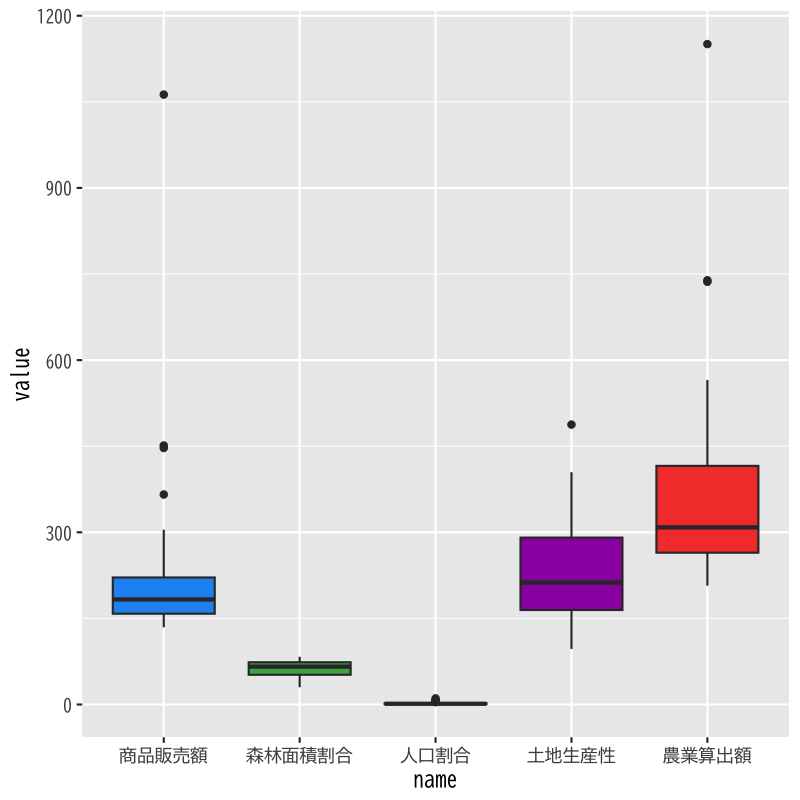
Figure 2: 各変数の箱ひげ図
各変数の標本平均を0，不偏分散を1に規格化する
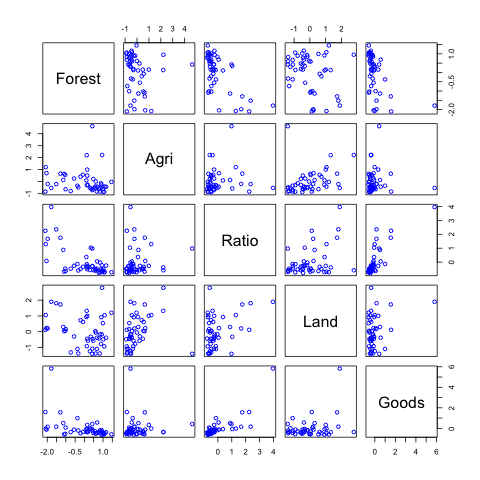
Figure 3: 正規化したデータの散布図
変数のばらつきをそろえる
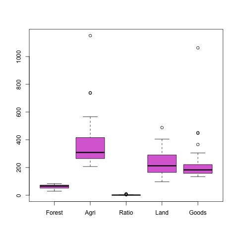
Figure 4: 各変数の箱ひげ図
主成分負荷量 (正規化なし)
| PC1 | PC2 | PC3 | PC4 | PC5 | |
| Forest | -0.014 | 0.048 | -0.0004 | -0.998 | -0.049 |
| Agri | 0.973 | 0.121 | -0.197 | -0.008 | 0.0004 |
| Ratio | 0.002 | -0.012 | 0.00002 | 0.049 | -0.999 |
| Land | 0.222 | -0.247 | 0.943 | -0.016 | 0.003 |
| Goods | 0.065 | -0.960 | -0.267 | -0.048 | 0.009 |
寄与率
| PC1 | PC2 | PC3 | PC4 | PC5 | |
| Standard deviation | 173.275 | 148.037 | 81.523 | 12.972 | 1.052 |
| Proportion of Variance | 0.511 | 0.373 | 0.113 | 0.003 | 0.00002 |
| Cumulative Proportion | 0.511 | 0.884 | 0.997 | 1.000 | 1 |
第1,2主成分得点の表示
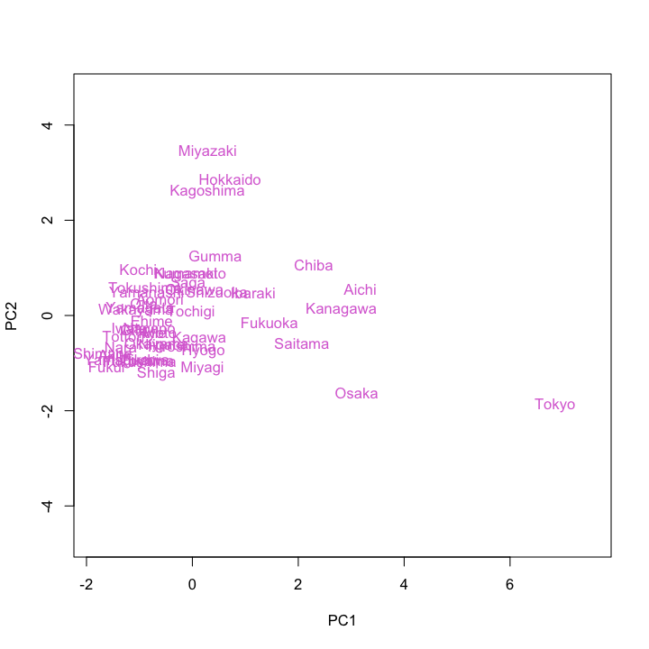
Figure 5: 主成分得点による散布図 (正規化なし)
第3,2主成分得点の表示
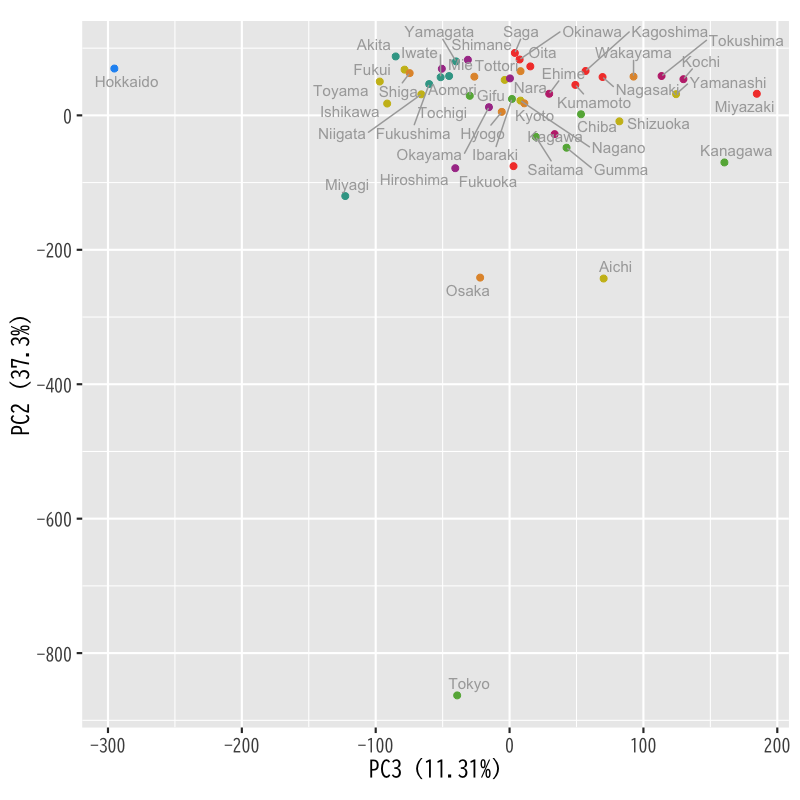
Figure 6: 主成分得点による散布図 (正規化なし)
主成分負荷量 (正規化あり)
| PC1 | PC2 | PC3 | PC4 | PC5 | |
| Forest | -0.487 | 0.105 | -0.457 | 0.686 | -0.268 |
| Agri | 0.134 | 0.812 | 0.479 | 0.305 | 0.035 |
| Ratio | 0.585 | -0.151 | 0.045 | 0.164 | -0.778 |
| Land | 0.355 | 0.485 | -0.742 | -0.290 | 0.069 |
| Goods | 0.526 | -0.269 | -0.095 | 0.571 | 0.562 |
寄与率
| PC1 | PC2 | PC3 | PC4 | PC5 | |
| Standard deviation | 1.590 | 1.070 | 0.820 | 0.708 | 0.392 |
| Proportion of Variance | 0.506 | 0.229 | 0.134 | 0.100 | 0.031 |
| Cumulative Proportion | 0.506 | 0.735 | 0.869 | 0.969 | 1 |
第1,2主成分得点の表示
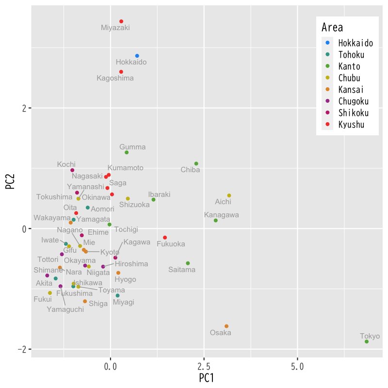
Figure 7: 主成分得点による散布図 (正規化あり)
第3,2主成分得点の表示
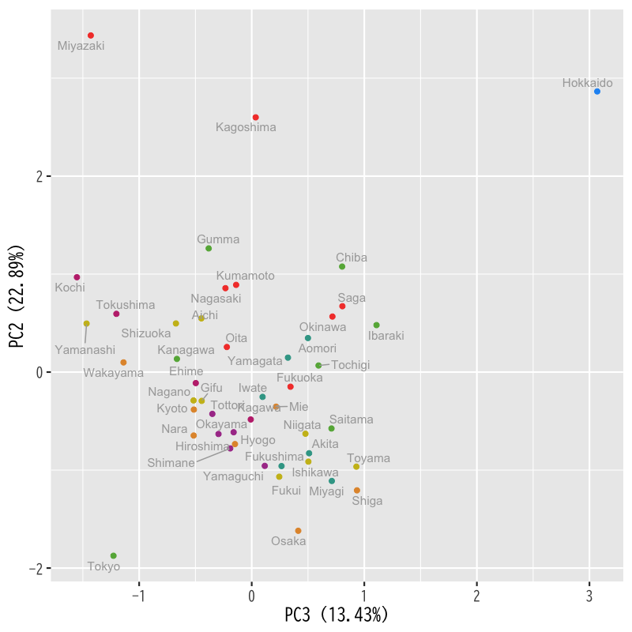
Figure 8: 主成分得点による散布図 (正規化あり)
正規化条件を満たす線形変換 \(x'_{ij}=a_{j}(x_{ij}-b_{j})\) を求めよ
\begin{equation} \frac{1}{n}\sum_{i=1}^{n}x'_{ij}=0,\quad \frac{1}{n-1}\sum_{i=1}^{n}(x'_{ij})^{2}=1 \end{equation}
正規化されたデータ行列を
\begin{equation} X' = \begin{pmatrix} {\boldsymbol{x}'_{1}}^{\mathsf{T}}\\ \vdots \\ {\boldsymbol{x}'_{n}}^{\mathsf{T}} \end{pmatrix} = \begin{pmatrix} x'_{11} & \cdots & x'_{1p}\\ \vdots & & \vdots \\ x'_{n1} & \cdots & x'_{np} \end{pmatrix} \end{equation}
と書くとき， \(X'^{\mathsf{T}}X'\)の対角成分を求めよ
標本平均の定義どおりに計算すればよい
\begin{align} \frac{1}{n}\sum_{i=1}^{n}x'_{ij} &= \frac{1}{n}\sum_{i=1}^{n}\left(a_{j}(x_{ij}-b_{j})\right)\\ &= a_{j}\left(\frac{1}{n}\sum_{i=1}^{n}x_{ij}-b_{j}\right)\\ &=0 \end{align}したがって
\begin{equation} b_{j} = \frac{1}{n}\sum_{i=1}^{n}x_{ij} =\bar{x}_{j} \quad\text{(元の変数の標本平均)} \end{equation}
不偏分散も同様に計算すればよい
\begin{align} \frac{1}{n-1}\sum_{i=1}^{n}(x'_{ij})^{2} &= a_{j}^{2}\frac{1}{n-1}\sum_{i=1}^{n}(x_{ij}-\bar{x}_{j})^{2}\\ &=1 \end{align}したがって
\begin{equation} a_{j} = \left(\frac{1}{n-1}\sum_{i=1}^{n}(x_{ij}-\bar{x}_{j})^{2}\right)^{-1/2} \quad\text{(標準偏差の逆数)} \end{equation}
不偏分散での標準化であることに注意する
\begin{equation} (X'^{\mathsf{T}}X')_{jj} = \sum_{i=1}^{n}(x'_{ij})^{2} = n-1 \end{equation}
主成分と変数の相関係数
\begin{align} \mathrm{Cor}(X\boldsymbol{a}_{k},X\boldsymbol{e}_{j}) % &=\frac{(X\boldsymbol{a}_{k})^{\mathsf{T}}X\boldsymbol{e}_{l}} % {\sqrt{(X\boldsymbol{a}_{k})^{\mathsf{T}}X\boldsymbol{a}_{k}} % \sqrt{(X\boldsymbol{e}_{l})^{\mathsf{T}}X\boldsymbol{e}_{l}}}\\ &=\frac{\boldsymbol{a}_{k}^{\mathsf{T}}X^{\mathsf{T}}X\boldsymbol{e}_{j}} {\sqrt{\boldsymbol{a}_{k}^{\mathsf{T}}X^{\mathsf{T}}X\boldsymbol{a}_{k}} \sqrt{\boldsymbol{e}_{j}^{\mathsf{T}}X^{\mathsf{T}}X\boldsymbol{e}_{j}}}\\ &=\frac{\lambda_{k}\boldsymbol{a}_{k}^{\mathsf{T}}\boldsymbol{e}_{j}} {\sqrt{\lambda_{k}}\sqrt{(X^{\mathsf{T}}X)_{jj}}} \end{align}
第 \(k\) 主成分に対する相関係数ベクトル
\begin{equation} \boldsymbol{r}_{k} =\sqrt{\lambda_{k}/(n-1)}\cdot\boldsymbol{a}_{k}, \quad (\boldsymbol{r}_{k})_{j} =\sqrt{\lambda_{k}/(n-1)}\cdot(\boldsymbol{a}_{k})_{j} \end{equation}
階数 \(r\) の \(n\times p\) 型行列 \(X\) の分解
\begin{equation} X=U\Sigma V^{\mathsf{T}} \end{equation}
\(\Sigma\) は \(n\times p\) 型行列
\begin{equation} \Sigma = \begin{pmatrix} D & O_{r,p-r}\\ O_{n-r,r} & O_{n-r,m-r} \end{pmatrix} \end{equation}
行列 \(\Sigma\) の成分表示
\begin{equation} \Sigma = \begin{pmatrix} \sigma_{1}&&&\\ &\ddots&&O_{r,p-r}\\ &&\sigma_{r}&\\ &&&\\ &O_{n-r,r} && O_{n-r,m-r} \end{pmatrix} \end{equation}
Gram行列の展開
\begin{align*} X^{\mathsf{T}}X &=(U\Sigma V^{\mathsf{T}})^{\mathsf{T}}(U\Sigma V^{\mathsf{T}})\\ &=V\Sigma^{\mathsf{T}}U^{\mathsf{T}}U\Sigma V^{\mathsf{T}}\\ &=V\Sigma^{\mathsf{T}}\Sigma V^{\mathsf{T}} \end{align*}
行列 \(\Sigma^{\mathsf{T}}\Sigma\) は対角行列
\begin{equation} \Sigma^{\mathsf{T}}\Sigma = \begin{pmatrix} \sigma_{1}^{2}&&&&&\\ &\ddots&&&&\\ &&\sigma_{r}^{2}&&&\\ &&&0&&\\ &&&&\ddots&\\ &&&&&0 \end{pmatrix} \end{equation}
\(\Sigma\)が対角成分しか持たないことに注意すると 以下のように展開される
\begin{equation} X = U\Sigma V^{\mathsf{T}} = \sum_{k=1}^{r}\sigma_{k}\boldsymbol{u}_{k}\boldsymbol{v}_{k}^{\mathsf{T}} \end{equation}
先週の演習問題と特異値分解を比較する
\begin{equation} X^{\mathsf{T}}X = V\Sigma^{\mathsf{T}}\Sigma V^{\mathsf{T}} = A^{\mathsf{T}}\Lambda A \end{equation}より
\begin{equation} \lambda_{k} = \begin{cases} \sigma_{k}^{2},&k\leq r\\ 0,&k>r \end{cases} \end{equation}
転置に気をつけて同様に比較すればよい
\begin{equation} A = \begin{pmatrix} \boldsymbol{a}_{1}^{\mathsf{T}}\\ \vdots \\ \boldsymbol{a}_{p}^{\mathsf{T}} \end{pmatrix} \end{equation}と定義されているので 主成分負荷量(固有ベクトル)は行列 \(V\) の列ベクトル
\begin{equation} \boldsymbol{a}_{k}=\boldsymbol{v}_{k} \end{equation}
主成分得点の定義どおり計算する
\begin{equation} X\boldsymbol{a}_{k} =U\Sigma V^{\mathsf{T}}\boldsymbol{v}_{k} =\sigma_{k}\boldsymbol{u}_{k} \end{equation}
データ行列の特異値分解 : (\(\Sigma\) の非零値に注意)
\begin{equation} X = U\Sigma V^{\mathsf{T}} = \sum_{k=1}^{r}\sigma_{k}\boldsymbol{u}_{k}\boldsymbol{v}_{k}^{\mathsf{T}} \end{equation}
第 \(k\) 主成分と第 \(l\) 主成分を用いた行列 \(X\) の近似 \(X'\)
\begin{equation} X\simeq X' =\sigma_{k}\boldsymbol{u}_{k}\boldsymbol{v}_{k}^{\mathsf{T}} +\sigma_{l}\boldsymbol{u}_{l}\boldsymbol{v}_{l}^{\mathsf{T}} \end{equation}
行列の積による表現
\begin{align} X'=&GH^{\mathsf{T}}, (0\leq s\leq1)\\ &G= \begin{pmatrix} \sigma_{k}^{1-s}\boldsymbol{u}_{k}& \sigma_{l}^{1-s}\boldsymbol{u}_{l} \end{pmatrix},\quad H= \begin{pmatrix} \sigma_{k}^{s}\boldsymbol{v}_{k}& \sigma_{l}^{s}\boldsymbol{v}_{l} \end{pmatrix} \end{align}
行列\(G,H\)の各行を2次元座標と見なす
\begin{equation} X'=GH^{\mathsf{T}} \end{equation}
主成分負荷量 (正規化あり)
| PC1 | PC2 | PC3 | PC4 | PC5 | |
| Forest | -0.487 | 0.105 | -0.457 | 0.686 | -0.268 |
| Agri | 0.134 | 0.812 | 0.479 | 0.305 | 0.035 |
| Ratio | 0.585 | -0.151 | 0.045 | 0.164 | -0.778 |
| Land | 0.355 | 0.485 | -0.742 | -0.290 | 0.069 |
| Goods | 0.526 | -0.269 | -0.095 | 0.571 | 0.562 |
寄与率
| PC1 | PC2 | PC3 | PC4 | PC5 | |
| Standard deviation | 1.590 | 1.070 | 0.820 | 0.708 | 0.392 |
| Proportion of Variance | 0.506 | 0.229 | 0.134 | 0.100 | 0.031 |
| Cumulative Proportion | 0.506 | 0.735 | 0.869 | 0.969 | 1 |
第1,2主成分によるバイプロット
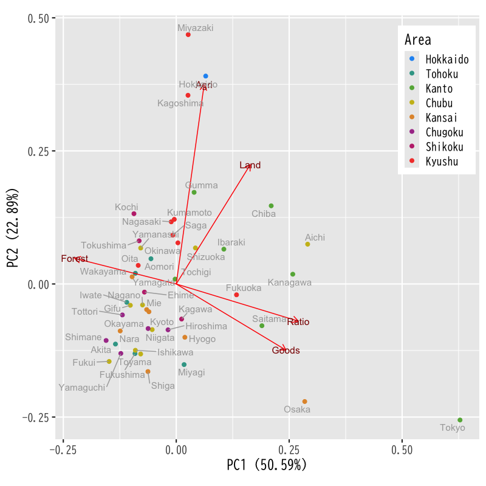
Figure 9: 主成分分析のバイプロット(第1,2)
第3,2主成分によるバイプロット
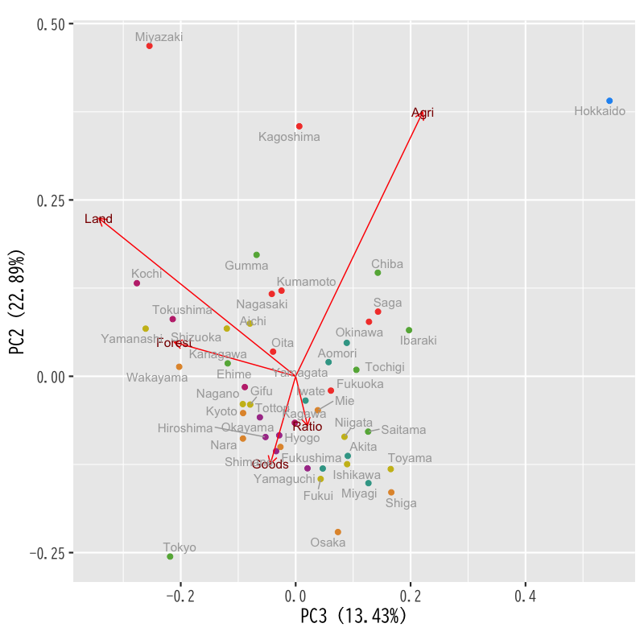
Figure 10: 主成分分析のバイプロット(第3,2)
中心部の拡大 (第1,2主成分)
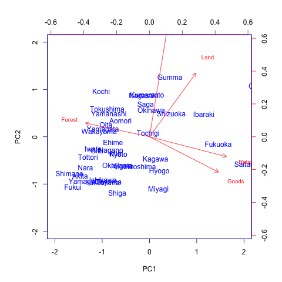
Figure 11: 主成分分析のバイプロット(第1,2)
中心部の拡大 (第3,2主成分)
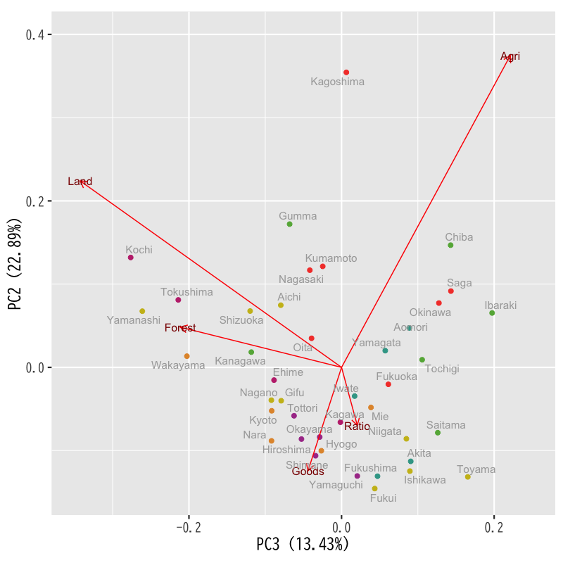
Figure 12: 主成分分析のバイプロット(第3,2)